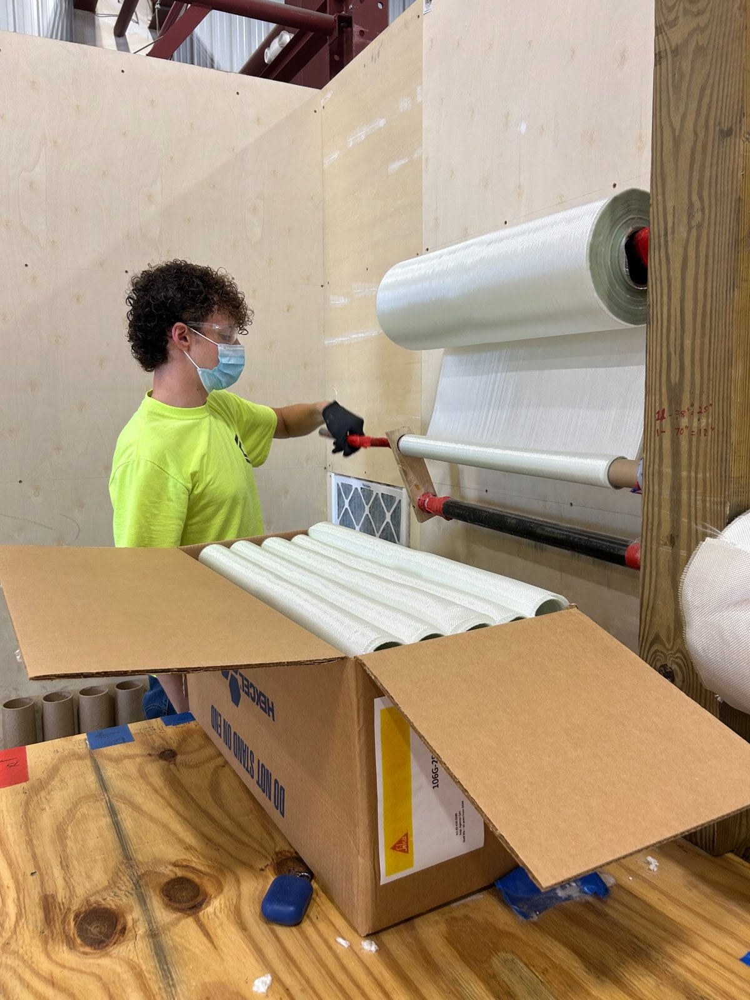

Industry project
CompletedCTI Roller
Engineering internship project

Overview
During my engineering internship at Composite Technology and Infrastructure in Coeymans, New York, I designed and fabricated a custom fiberglass roller that doubled my rolling efficiency. What began as a recurring warehouse task became an opportunity to improve a process, build a practical tool, and leave something useful behind.
Identifying the opportunity
After completing office assignments, I helped prepare fiberglass repair sheets for a New York City subway repair project. Weekly shipments arrived as boxes of fiberglass rolls that needed to be pulled out, measured, cut, rerolled, and stored. Repeating this process made the time spent handling and measuring the material especially apparent.
I proposed a roller sized so that a known number of rotations would produce the required sheet length and a roll that fit easily into its storage box. As I continued doing the work, I developed the idea and earned my supervisor’s approval to build a prototype.
My contribution
I identified the process improvement, proposed the concept, and took responsibility for designing, building, and testing the roller. Having worked at CTI over two summers, I knew the warehouse inventory and the people who could help me turn the idea into a working tool.
That familiarity helped me make effective use of available materials and seek guidance when learning unfamiliar fabrication tasks.
Design & prototyping
I built the roller using available PVC tubing, cardboard tubes, wood, and putty to secure components. With guidance, I learned to use a saw to cut the parts to the sizes I needed.
Prototype improvement — PVC to cardboard: My initial design rolled the fiberglass onto PVC tubing, but the material slipped on its surface. I switched the winding tube to cardboard, which provided enough grip to start rolling without a separate fastener to hold the fiberglass in place. The cardboard also allowed the finished roll to slide off easily, meeting both the gripping and removal requirements.
Rolling and release: After rolling the fiberglass to the required length, I cut the sheet and pulled the winding tube out of the finished roll. This released the material for storage and allowed me to prepare the roller for the next sheet.
I prototyped and adjusted the dimensions to check that the roller could measure and roll the fiberglass effectively while producing a roll suitable for storage. The design connected the roller’s dimensions and rotation count to the required material length, reducing the repeated handling involved in the original workflow.
Results & impact
The roller doubled my fiberglass-rolling efficiency, saving time on a repetitive task and allowing workers to spend more time on work that made better use of their skills. The company has continued using the roller beyond my internship.
The project showed me how observing a routine task closely, proposing an improvement, and following through with a working prototype can create lasting value.
What I learned
This was one of my first hands-on introductions to fabrication, prototyping, and practical engineering problem-solving. I learned to work with available materials, seek help from experienced colleagues, and refine a design through testing.
Seeing a simple tool make a meaningful difference was a highlight of my early engineering internship experience. It reinforced how much I enjoy identifying a problem, building a solution, and seeing people benefit from it.
Project gallery

